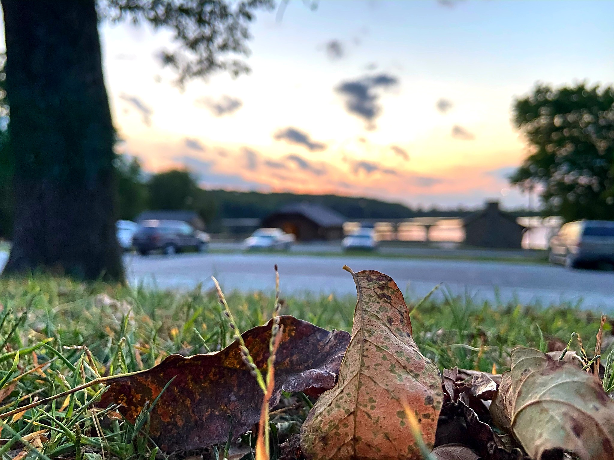

WELCOME TO INDIANOLA TRAILS

Lake Ahquabi trail a train running along the Aquabi rive. the trail is sarounded with many diferent vies including the vie of the lake from various locations. The trail is both in the woods with gravel and roots covered trail surface and along the lake. the train goes in the woods and on the shoreline of the lake.
|  |
 |
|---|
shoreline covers four(4) miles of the trail the woods cover two and a half miles of the trail(2.5)
16510 118th Ave, Indianola, IA 50125, United States